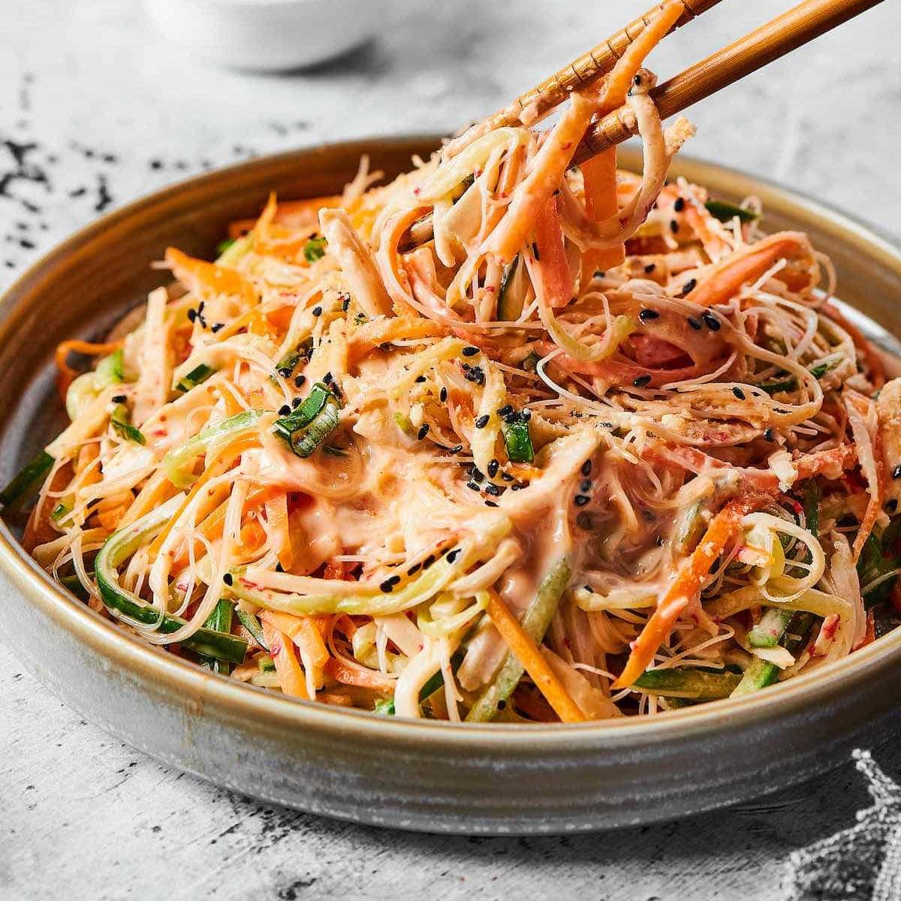

Apryl Tagle Rubidium August 26, 2025
My Favorite Kani Salad Recipe
Kani salad is an easy dish to make with only 5 ingredients for the salad and 7 for the dressing!
Ingredients
Salad ingredients
- 1 Carrot
- 1 Cucumber
- 1 Ripe mango
- 2 table spoons of Panko
- 1 teaspoon of seasame speeds
Dressing ingredients
- 1/4 cup of mayonnaise
- 1 lemon juice
- 1/2 teaspoon granulated sugar
- 250g shredded crab sticks
- 1/2 teaspoon salt
- 1/2 teaspoon ground black pepper
Instructions
- Mix all dressing ingredients in a bowl
- Get another bowl and add shredded crab sticks, julienned cucumber, carrot, and mango
- Mix both vegtables and dressing
- Serve them together on a plate
Picture
